Restore your body's balance with
AI-guided physical therapy
KAYA is your personal web-based posture assistant. We seamlessly blend AI posture tracking with the traditional wisdom of Rusie Dutton, offering simple, desk-friendly stretches. KAYA gently reminds you to move, correct your alignment, and breathe naturally, all without the need for extra equipment.


Our AI runs in the background via your webcam, monitoring your posture to detect slouching or prolonged sitting.
An animated ring guides your inhales and exhales to sync with Rusie Dutton poses, helping you regain focus and melt away fatigue.
Friendly, subtle notifications appear in the corner of your screen. They never force you to stop, allowing you to stretch and seamlessly return to your workflow.
" Simple steps to better health, right from your desk "
Let's Begin